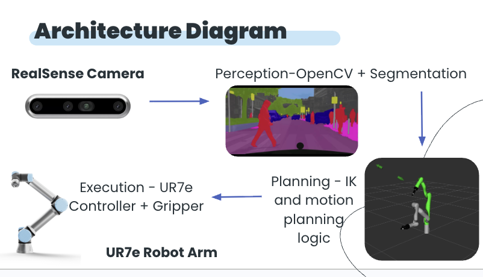
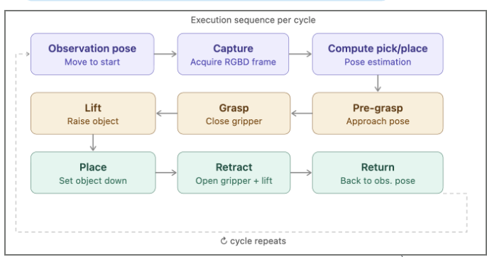
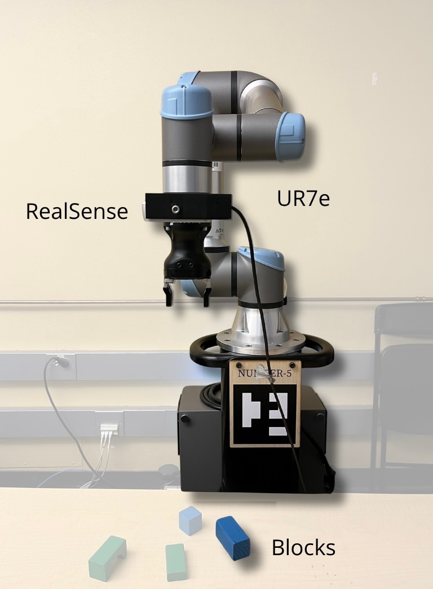
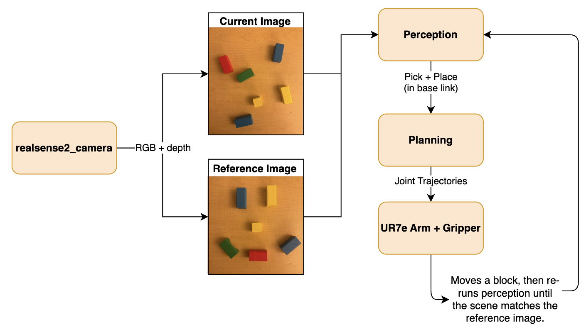
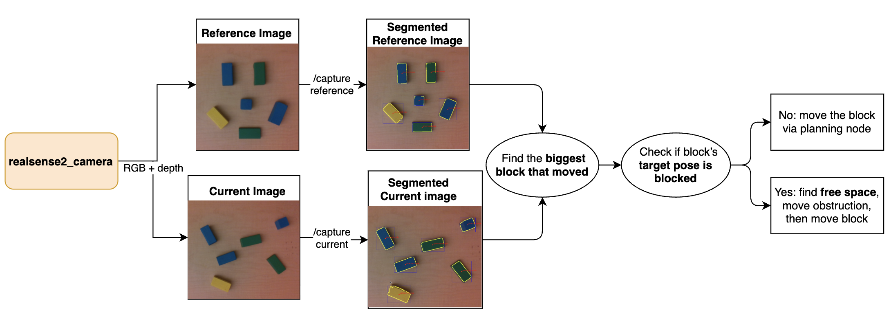
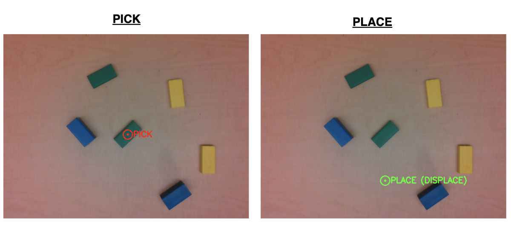
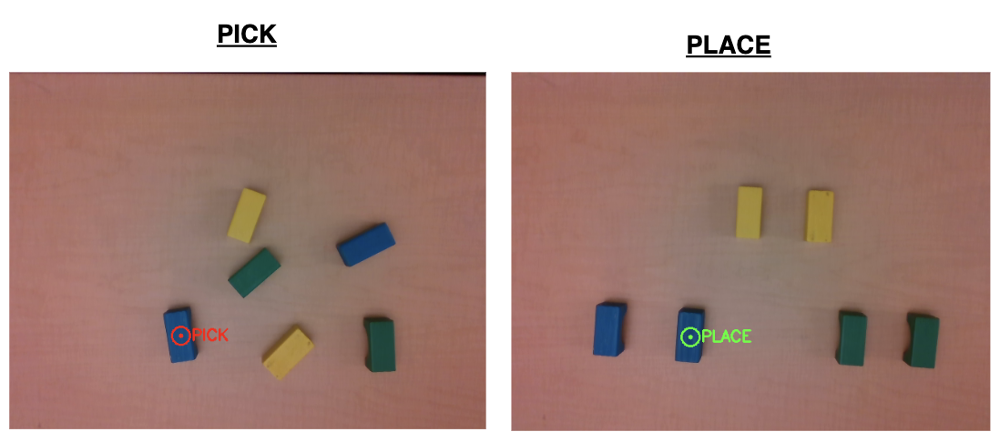
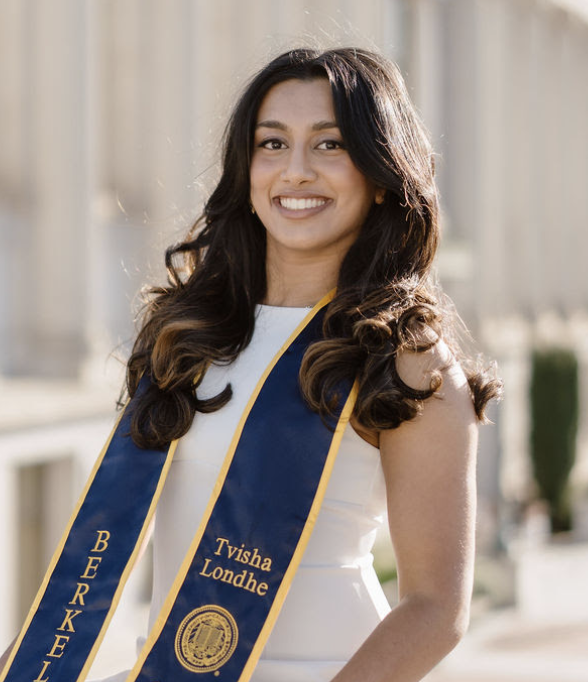
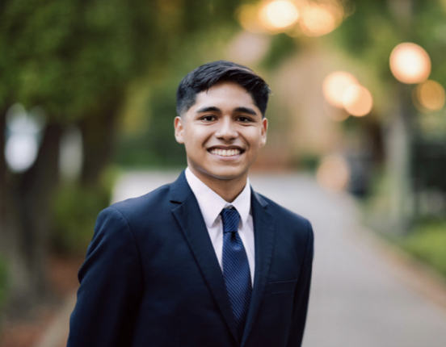

Abstract
You just finished the last homework problem for EECS 106A and your desk is a mess! After all that work, you still have to think about how you want to reorganize it. Tidying up a table top is much more complex than simple pick and place. A robot has to reason over different objects, occupied spaces, and handle user specifications. Personalized Assistive Robotics heavily relies on a policy's ability to understand human preferences and instructions. Recent works have leveraged VLMs to understand visual and textual descriptions of desired scenes/states. Despite their impressive zero-shot capabilities, VLMs heavily suffer from a lack of spatial and geometric understanding which is fundamental for deploying robots in real-world messy environments. Therefore we take a different approach to scene reconstruction and address “tidying-up” not with foundation models or learned policies but with explicit 3D geometry motivated by classical robotic techniques. We introduce Tidyer, a Zero-Shot Framework to Clean Messy Tabletops. The system takes two inputs: a user-provided reference image of the desired workspace and a live RGB-D view of the current scene, refreshed after each manipulation. By iterating until the scene matches the reference within tolerances, the robot gradually reshapes the workspace toward the goal specified layout. Our technique serves as a method to introduce generalizability (contour shape detection), interactability (human-controlled preferences), and robustness (recovery behavior).
Video Highlights
Ex. 1: Rotation and translation
Ex. 2: 2-way swap
Ex. 3: Smiley face (art)
Ex. 4: Tidy Desk + Self-correction
Ex. 5: 3D structures + Self-Correction (chairs)
Ex. 6: 3D structures (staircase)
1. Introduction
1.1 Goals
Our primary goal is to foreground the difficulty of reliable manipulation: What is a practical way to pick up an object and place it where it belongs? How can we instill recovery behavior into our closed-loop execution? Using color and shape cues together with depth-backed 3D estimates, we built a strategy that repeatedly proposes feasible pick and place poses for a parallel-jaw gripper on a UR7e. Furthermore, actively capturing current-state images after each manipulation (pick + place) naturally enables recovery behaviors that ensure robustness against both human- and robot-induced mistakes in grasping or placing. Our second goal is to design a traditional perception + MoveIt pipeline capable of reasoning about scene reconstruction without relying on heavy-weight foundation models for high- and low-level planning.
1.2 Motivation and justification
Much of robotics has become increasingly data driven. Although this approach has demonstrated exceptional promise, it also introduces challenges such as extensive data collection requirements, difficulty generalizing reliably to real-world scenes, and limited understanding of task completion status. Therefore, we sought to build a perception and manipulation pipeline that does not rely on training data while still remaining capable of operating in messy environments.
Tidying a desk is a relatable instance of reference-conditioned rearrangement: the goal configuration is explicit through a reference image, success is visually verifiable, and errors compound quickly when depth estimation or calibration is inaccurate. The task also naturally requires geometric perception, discrete sequencing (which block moves first when goals overlap), and industrial-grade motion planning on real hardware shared across the class.
Related work on language-conditioned block assembly, such as Blox-Net, which generates feasible assemblies from prompts and closes the loop with simulation and a physical robot, motivated us to think about constraint-aware layouts, even though our system conditions on an image rather than free text ( Goldberg et al., arXiv:2409.17126 ).
1.3 From proposal to final system
Our initial write-up proposed a VLM-as-judge technique to evaluate object placement. We intended for the model to analyze frame-by-frame differences, utilize dense correspondence, and optimize for in-plane rotations during placement.
After TA feedback favoring minimal models and inspectable geometry,
our stack instead centered on
OpenCV HSV segmentation,
RealSense intrinsics + depth,
RANSAC plane fitting for block-top height,
PCA-based grasp yaw in base_link, and
MoveIt IK + RRTConnect for execution
(tidyer/perception/rgbd_perception.py,
tidyer/planning/ik.py,
tidyer/planning/main.py).
This pivot traded the broad object generality commonly found in cluttered desk environments for a more interpretable and reliable perception stack centered on colored blocks. Although this may appear limiting, we view the project as a proof of concept demonstrating how carefully designed geometric pipelines can avoid many of the robustness and data challenges associated with learning-based systems.
Furthermore, due to the modular nature of our framework, a VLM could later be reattached to handle greater object diversity while preserving the same planning and execution infrastructure.
1.4 Sensing, Planning, and Actuation (How the Pieces Fit)
Sensing:
An Intel RealSense streams aligned RGB-D data; the perception node segments
stable regions above a captured desk plane, lifts 2D detections into 3D in
the camera frame, and transforms points into base_link using
tf2_ros.
Planning:
The planner matches reference detections to current detections using color
labels and classified shapes, flags motion beyond pixel and yaw tolerances,
resolves place-footprint overlap by temporarily moving blocking objects to a
computed free desk location when stacking mode is disabled, and publishes a
two-pose PoseArray on /pick_place_pair. Stacking
mode bypasses collision-overlap checks since intentional object overlap is
required.
Actuation: The pick-and-place node chains IK solutions with seeded continuity, sends time-parameterized trajectories to the UR controller, toggles a binary gripper service, and returns the arm to a known observation configuration before the next capture cycle.
2. Design
2.1 High-Level Design
- Take a snapshot of an empty table to estimate the median desk depth and treat it as ground truth for the desk plane.
- Take a reference image snapshot of the desk and treat it as the ground-truth configuration of the colored blocks.
-
After every pick and place, capture another snapshot
(current image) and compare it to the reference image. Command
at most one executable pick and place per comparison cycle.
- Account for placement conflicts (e.g., another object already occupies the desired placement location).
-
Publish goals in terms of
base_link. Repeat the process until the current image matches the reference image, ensuring that the same shape/color appears in a similar position (centroid) and orientation (yaw).
To support simple 3D structures, enable a stacking mode that skips overlap-conflict handling since overlap becomes intentional. Construct structures through a sequence of intermediate reference images.
2.2 Architecture

ros2 launch tidyer tidyer_bringup.launch.py launches the
RealSense pipeline (RGB + aligned depth), the
rgbd_perception node, tidyer_tf for the
wrist-to-camera static transform, tidyer_pick_place for
manipulation, and the UR MoveIt stack.
ros2 run tidyer tidyer_keyboard is started manually alongside
the launch files to separate autonomous execution nodes from user input and
keyboard-triggered commands.
2.3 Planning and Control
Each tidy cycle follows the same staged motion contract:
- Arm returns to a default observation position.
- Perception acquires an aligned RGB-D frame.
- Pick and place goals are computed.
- The executor runs an approach, grasp, lift, place, retract, and return-home sequence before triggering the next capture cycle.

2.4 Key engineering trade-offs
- HSV thresholds are fast to iterate but sensitive to exposure; we expose per-color JSON ranges (
hsv_ranges_json) rather than burying constants in code. - Desk plane median from an empty-desk capture (
/capture_desk_depth) anchors a depth band mask so segmentation does not bleed across the table. - RANSAC vs. raw median depth on the block top rejects side-surface outliers before grasp Z is committed.
- MoveIt at 0.3 velocity scaling favors safe execution over minimum cycle time. That is important when perception noise remains on the order of millimeters to centimeters.
2.5 Robustness
- PCA yaw estimation is suppressed for nearly symmetric eigenvalue ratios so the gripper does not oscillate between unstable orientations.
-
IK calls are seed-chained across waypoints in
pair_callbackto reduce wrist flips and improve trajectory continuity.
3. Implementation
3.1 Hardware

Bill of materials (lab stack): one UR7e with parallel gripper, one Intel RealSense D435-class RGB-D camera, assorted standardized colored blocks for repeatable tests, and the department robot desk. Aligned depth is required to lift segmented regions into 3D for grasp and placement without a separate structured-light rig.
3.2 Overarching Pipeline

- The RealSense2 camera captures both the current workspace image and the reference image. It also provides depth data and camera intrinsics, which are sent to the perception node.
-
The perception node segments the images, compares the current scene to the reference scene,
identifies blocks that need to be moved, computes the pick-and-place poses, and transforms
points from the camera frame into the
base_linkframe using TF. - The planning node takes the pick-and-place poses, builds motion waypoints, solves inverse kinematics (IK), generates a MoveIt plan, executes the motion, and toggles the gripper.
- The UR7e arm executes the joint trajectories to move one block at a time. After each move, the system loops back to perception, captures an updated scene, and repeats until the current arrangement matches the reference image.
Declared runtime dependencies in package.xml include rclpy, sensor_msgs, geometry_msgs, cv_bridge, moveit_msgs, tf2_ros, realsense2_camera, ur_moveit_config, and the launch stack.
3.3 Perception (rgbd_perception.py)
Input: Current RGB-D image and reference RGB-D image
Output: Pick and place poses for each moved block
- Subscribe to RGB, aligned depth, and
CameraInfo; cache camera intrinsicsfx,fy,cx, andcy. - Capture an image of the empty desk to estimate the desk plane depth. This depth is later used to segment blocks from the desk by masking pixels whose depth lies slightly above the desk plane.
- On
/capture_reference, segment all objects in the reference frame and store the detections along with the RGB snapshot. - For each detected block, store its color, shape, centroid, contour area, 3D position in the camera frame, yaw, and contour mask.
-
On
/capture_current, segment all objects in the live frame, match them to reference objects by color and shape, and mark a block as “moved” if:- the centroid distance exceeds
position_tolerance_pxdefault: 50 px, or -
the yaw difference exceeds
yaw_tolerance_rad≈10° for non-symmetric shapes.-
We estimate grasp yaw using 3D PCA on the block's top surface. The contour mask is eroded to
reduce edge noise, pixels within 5 mm of the top depth percentile are projected into 3D camera
coordinates, and PCA is applied to recover the dominant axis of the block before transforming
the orientation into
base_link. This improves grasp robustness across different block shapes and sizes. - We use RANSAC plane fitting on the contour to fit the dominant plane corresponding to the block's top surface, reject outliers and noisy side pixels, and obtain a more robust depth estimate for the block top.
-
We estimate grasp yaw using 3D PCA on the block's top surface. The contour mask is eroded to
reduce edge noise, pixels within 5 mm of the top depth percentile are projected into 3D camera
coordinates, and PCA is applied to recover the dominant axis of the block before transforming
the orientation into
- the centroid distance exceeds
-
Swap conflict resolution: Before publishing the pose, the system performs a collision check by determining
whether any current detection's contour intersects the reference placement contour,
dilated by
overlap_margin_px = 5to absorb segmentation and placement jitter. If stacking mode is disabled and an overlap is detected:- The system selects the largest occupier and temporarily displaces it to a free desk location before executing the intended tidy action.
- The free location is computed by constructing a binary mask of valid desk pixels (pixels near the desk depth and not occupied by any current contour), running a distance transform over the mask, and selecting a qualifying pixel whose distance value can fit the block's bounding radius. Among all qualifying pixels, the system chooses the one closest to the block's current centroid to minimize displacement.
- Publish the final pick and place poses in
base_linkon/pick_place_pair. - Save debug images and JSON metadata under
~/final_proj/pair/for post-run inspection.

label:shape annotations.
3.4 Execution pipeline (main.py, ik.py)
The executor subscribes to /pick_place_pair, lifts waypoints for approach and finger insertion offsets, solves IK through MoveIt's /compute_ik, plans between joint goals with RRTConnectkConfigDefault via /plan_kinematic_path, sends trajectories to /scaled_joint_trajectory_controller/follow_joint_trajectory, and toggles /toggle_gripper at the appropriate queue points. After a cycle it returns to DEFAULT_JOINTS and can optionally trigger another /capture_current when the auto-capture chain is armed, closing the outer tidy loop without a VLM in the middle.
3.5 Self-Correction (rgbd_perception.py)
A useful emergent property of the pipeline is closed-loop self-correction, which arises from two
deliberately conservative design choices: the perception system only emits a single
(pick, place) pair per evaluation, and the execution loop re-triggers
/capture_current after each completed arm cycle instead of pre-planning the entire
rearrangement. Because every iteration begins from a fresh RGB-D snapshot,
_find_moved_objects always compares the live scene against the reference image rather
than against an internally maintained belief state. As a result, any disturbance that occurs
mid-task is automatically incorporated into the next decision.
If the gripper nudges a neighboring block, a placed object slips, a human moves an item, or a stack collapses, the system does not need explicit recovery logic. On the next evaluation, the segmenter observes the updated scene, the matching stage identifies blocks whose centroid or orientation differs from the reference beyond the configured tolerances: 50 px and ≈10°. The largest moved object then becomes the next manipulation target.
The terminal condition, Scene aligned, is purely a function of the current frame
matching the reference detections, so execution continues until the physical world matches the goal
configuration rather than until a precomputed plan terminates.
Restricting the system to a single manipulation per cycle also limits error propagation. If a pick or placement fails, only one block becomes incorrect, and the next iteration naturally re-detects and repairs the mistake instead of allowing errors to compound across a long open-loop sequence.
The collision-handling logic in _occupiers_at_place_contour extends the same
philosophy: if a target placement is occupied, the system temporarily abandons the original move,
displaces the blocking object to a valid free-space location, and relies on the next perception
cycle to rediscover and complete the original goal once the obstruction is removed.
The result is a perception-driven manipulation loop with no long-horizon plan to invalidate. Every action is recomputed from the current scene, making the system naturally robust to the small, unpredictable disturbances common in real-world manipulation.
3.6 Operator workflow
Terminal A (interactive):
ros2 run tidyer tidyer_keyboard
Terminal B:
ros2 launch tidyer tidyer_bringup.launch.py
Robot prep (lab scripts):
ros2 run ur7e_utils enable_comms
ros2 run ur7e_utils tuck
ros2 run ur7e_utils reset_state
ros2 run ur7e_utils freedrive # when teaching or recovering
Desk workflow (keyboard):
Clear desk → d (/capture_desk_depth, median plane)
→ r (/capture_reference, goal layout)
→ c (/arm_auto_capture_chain + /capture_current until aligned)
→ s (/toggle_stacking) when building vertical structures3.7 Repository layout (selected)
tidyer/perception/rgbd_perception.py: perception, services, overlap logic, publisher.tidyer/planning/main.py: pick and place executor, job queue, auto-capture chain.tidyer/planning/ik.py: MoveIt IK and joint-space planning helpers.tidyer/planning/static_tf_transform.py: camera extrinsic from wrist.tidyer/planning/keyboard_trigger.py: operator-facing triggers.launch/tidyer_bringup.launch.py: integrated bring-up.
4. Results
4.1 Qualitative results
We demonstrated in-plane translation and rotation corrections, multi-block swapping with temporary freespace when goals collide, color-driven organization, deliberate "art" layouts, recovery after disturbances, and multi-layer assemblies when stacking mode is enabled. Each behavior exercises the same core loop (segment, diff against reference, plan one interaction, re-image) rather than a bespoke controller per scenario.


4.2 3D implementation
We do not run a full volumetric planner over explicit 3D voxel maps. Instead, vertical structure is handled as a sequence of mostly 2D problems: each stage still compares segmented blobs in the image to a saved reference, publishes one pick and one place pose per cycle, and relies on depth only where it already mattered for the tabletop case (intrinsics back-projection, RANSAC block-top height, desk-plane band masking).
Stacking vs. swapping. In the default (swap) path, if the reference footprint for a place overlaps another live block in the image, perception issues a temporary displacement pick and place so the table clears before the intended move. For 3D stacks, the operator toggles stacking mode with the s key, which calls /toggle_stacking: while stacking is on, that overlap check is skipped so the goal contour is allowed to sit on top of an existing supporter, reusing the same 2D correspondence machinery for layered builds.
Depth as a layer discriminator. Parameter place_occupied_depth_thresh_m (default 0.02 m) is tuned tighter than a full block height so a block resting one layer higher does not get mistaken for the same layer as the reference top when deciding whether something still needs to move.
Additional challengesWe are occasionally triggering the automatic e-stop due to varied depth; solution would be to design a custom spring mount that allows for a greater degree of error.
5. Conclusion
5.1 Outcomes vs. Criteria
The delivered system satisfies the core project criteria: reference capture, live scene differencing, overlap-aware sequencing, MoveIt-backed execution, and optional stacking support. Remaining challenges primarily concern robust real-world execution: lighting variation, reflective surfaces, and aggressive motion speeds can still lead to protective stops or IK failures, consistent with the manipulation difficulties identified in our proposal.
5.2 Challenges Encountered
-
TF connectivity: when
base_linkandcamera_color_optical_framewere not connected within the same transform tree, perception failed immediately with explicit TF errors. Furthermore, we had to carefully account for differences betweencamera_color_optical_frameandcamera_depth_optical_framewhen integrating RealSense depth data and transforms. - HSV sensitivity: segmentation required iterative tuning across changing lighting conditions. Exposing HSV bounds as JSON parameters allowed rapid experimentation without rebuilding the pipeline.
-
Depth and centroid noise: noisy depth measurements
motivated RANSAC top-plane fitting, desk-band masking, and Z-offset safety
margins (
pick_z_offset_m,place_z_offset_m) to reduce table collisions during pick and place execution. - Observation consistency: returning the arm to a repeatable observation pose between captures proved essential for stable image differencing and reliable closed-loop execution.
5.3 Future Work
Natural extensions include stronger segmentation methods such as SAM-style models with careful latency budgeting, richer collision reasoning beyond single-step overlap masks, learned or search-based grasp orientation for more heterogeneous objects, and optional language interfaces layered above the current reference-image contract.
These directions preserve the modular separation where most debugging effort was concentrated: the boundary between perception (“what moved?”) and motion generation (“how should the robot move?”).
Team

Tvisha Londhe
Tvisha is pursuing her undergraduate degree in EECS and is interested in machine learning and learning-based architectures.

Kenneth Llontop
Kenneth is pursuing his undergraduate degree in EECS and is interested in leveraging machine learning and robotics to improve social welfare.

Shivanshi Tandon
Shivanshi is pursuing her undergraduate degree in EECS and Business and is interested in intersecting software with her first-time experience in robotics to broaden solution capabilities.
Sarika Pasumarthy
Sarika is pursuing undergraduate degrees in Computer Science and Business Administration and is interested in AI/ML for social good and in solving interesting problems through combined hardware and software systems.
Additional Materials
References
A. Goldberg, K. Kondap, T. Qiu, Z. Ma, L. Fu, J. Kerr, H. Huang, K. Chen, K. Fang, and K. Goldberg, "Blox-Net: Generative Design-for-Robot-Assembly Using VLM Supervision, Physics Simulation, and a Robot with Reset," arXiv:2409.17126, 2024. https://arxiv.org/abs/2409.17126
Citation
@misc{tidyer2026,
title={Tidyer: Zero-Shot Framework to Clean Messy Tabletops},
author={Londhe, Tvisha and Llontop, Kenneth and Tandon, Shivanshi and Pasumarthy, Sarika},
year={2026},
note={EECS 106A Final Project, UC Berkeley, Group 17},
url={https://github.com/shivanshitandon/tidyer}
}